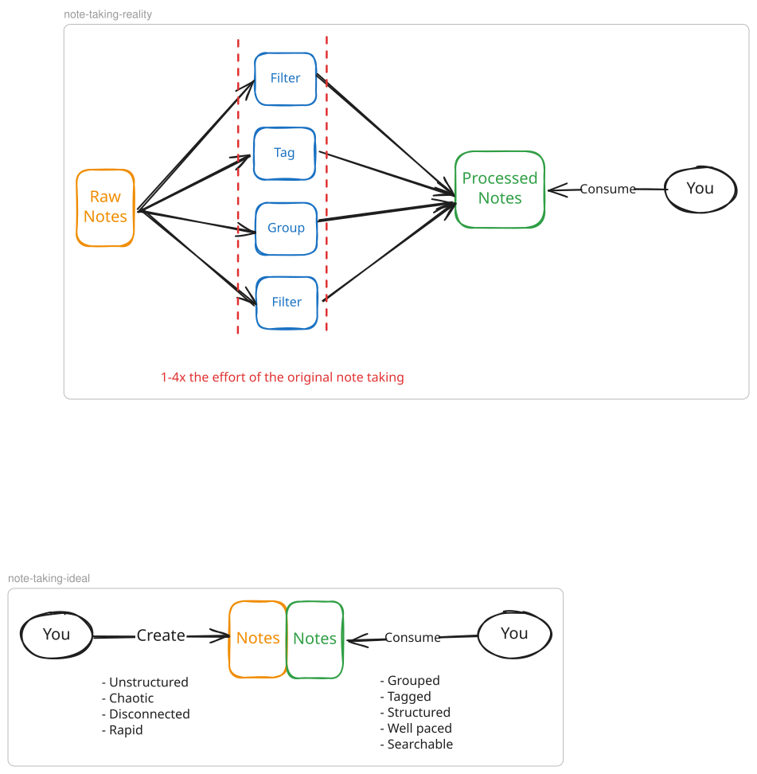
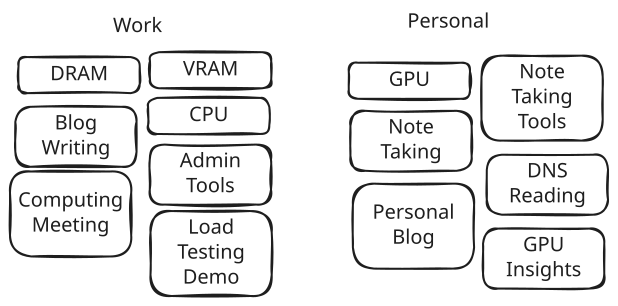
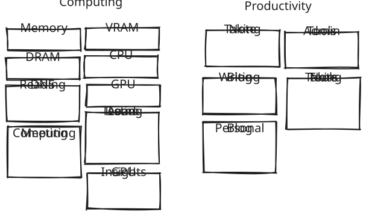
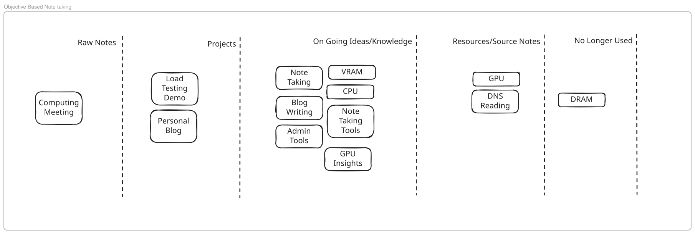
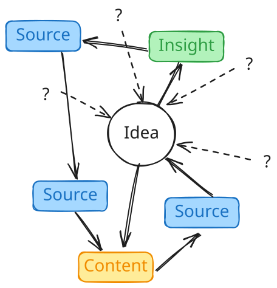
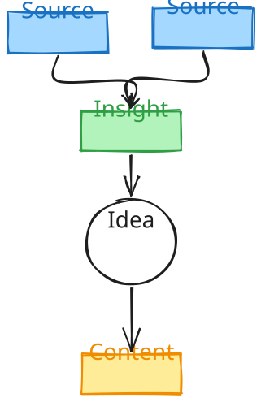
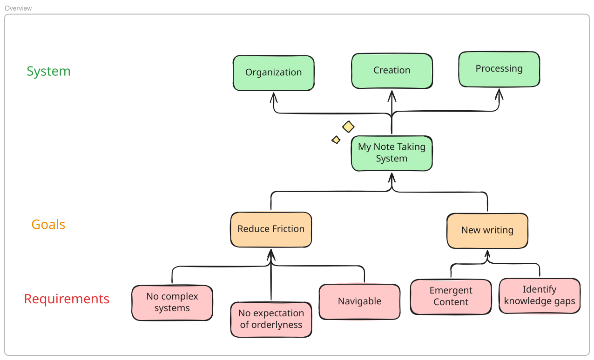

Note-taking and writing have many frameworks and some are going to work better for other people. A lot of time peers ask me how I take notes, what I suggest, what tools I use, what I automate etc.
Unfortunately any answer I provide fails to provide lasting value as it’s my note taking system. It works for me. It was emergent from years of trying things, adapting them, and taking portions of certain processes and putting them together.
But even more so, it’s adaptive to my current interests and focus. When I first started taking many more notes I started using PARA because I wasn’t able to find a structure that was clear to me where notes went. When I wanted to create and write I introduced Zettelkasten because I was unable to work backwards from an end result. These tools are more useful within the context of your needs rather than some holy aggregate of the best techniques around.
This extends to tooling. Obsidian, Bear, Evernote, M365 — these all can provide value depending on what you need. A comparison on which is the best will never work. A comparison of features will always work.
The key insight is this: I recommend continuously learning and experiencing new systems, testing them, and implementing the parts that do work while throwing out the parts that don’t. That frankenstein you create is the perfect note taking system.
Why Note-Taking Fails
We create and consume notes in different ways. Why do we take notes? This will be different for everyone but a few common reasons are: recall, discovery of new ideas, connections, helping you think about content you consume, and creating content.

Fundamentally you will always have an easier time creating notes one way and consuming them another way. This isn’t new information — this is why note taking systems and tools emerge. Obsidian is a famous tool for this as it simplifies connecting disparate ideas in the hopes of emerging content, connections, and recall.
The problem is Obsidian doesn’t do that for you, it can’t. It provides tools to enable this like connections, tagging, filters, grouping, embedding and so on. Ideally once done, it should be quite easy to go back through your notes.
However, these systems can take as long as or longer than creating the original notes. They also require attentiveness and discipline in a single framework. In my experience the way you think or like to read changes not only over time but from subject to subject making this inherently unsustainable unless you dedicate massive amounts of time to organization alone.
Due to this many note taking solutions fail.
Organizing Notes with PARA
There are more in depth reasons why PARA may be a good method but this insight is specifically why it works for me and my needs.
I use PARA to reduce friction by flattening out folder structures. Navigating folders can be hectic, and content can get buried. Additionally, categorization like that tends to be fluid and changing. Here’s an example:

I may originally think splitting my folders into Personal and Work make a lot of sense. But as I create new notes, I actually realize it’s more useful to me to switch the categories to Computing and Productivity right?

Well that’s also arbitrary. And thinking back to what we mentioned before, I want something that fits my note taking and consuming experience. I don’t consume or write notes based on where they exist, I interact with notes based on their purpose. This is why PARA works especially well from this perspective.

You can see here now my notes are organized more on how I’m thinking about them than what they can be categorized as. This is where an implementation of PARA works well.
- P → Projects: If I’m ever looking for projects with end dates in mind that I’m actively working on I can go to this section for that
- A → Areas: If I have an ongoing series of notes that have no end planned those can be together to aggregate insights
- R → Resources: Full sources/links/resources can live together as a sort of ingestion and aggregation section
- A → Archive: A dumping ground for content that’s no longer being actively used
Additionally I have a Raw notes section I call Inbox for anything that needs to find a home but for now just needs to be written down.
This leads to an incredibly streamlined way of creating notes, and we’ve effectively reduced friction. However in terms of gaining insights or creating new ideas, this still doesn’t really encourage that — it leads to lots of notes being taken but not a lot of ideas being generated or connections being made.
Emergent Note-Taking with Zettelkasten
In order for notes to develop novel ideas you need to be intentional about what you’ve learned from something and how it may connect to other ideas. Otherwise you run the risk of being repetitive from the content you consume. Typically ideas come from reading content anyway, but when we fail to capture that we also fail to capture the nuance of our insights.
This is where using a Zettelkasten system can provide value. The idea here is to be intentional about rewording insights from other sources to 1. ensure you’re paying attention and 2. begin introducing perspective to the content you consume. After creating enough of these atomic notes, you may find you’ve realized some new connections and from that you can create structured notes. These structured notes aim to be wholly new ideas seeded from inspiration you’ve consumed.
The biggest value I’ve found it provide is it challenges me to specifically word out and decide what I’m learning or seeing as I connect dots rather than moving backwards from an idea. When you start with an idea, there is no structure or clarity of where that came from or why you believe it should be making new content.

If you base your ideas off of moments or sudden “eureka” moments, you risk recreating content you’ve consumed in the past. The core insights you believe you’re providing become muddy. What’s your idea and what’s someone else’s? And then you need to go back and find sources to fill out gaps to make your idea more concrete. This isn’t an awful way of doing it, but you’re putting the car before the horse and over invest in ideas before they’ve fully formed.

Zettelkasten encourages a structured note-taking experience that I find avoids these pitfalls. Ideas don’t pop up from nowhere, their origins become distinct and tangible. By writing notes you consume in your own words, it’s clear what’s your insight and what is just a rewording of other’s content. When you have an idea, you need to intentionally connect the dots or take a leap from an existing note. You don’t write reactively, you write proactively. And instead of filling gaps you start with a mostly formed insight as you lead into new content creation.
Putting It Together
My note taking system is formed from a combination of experience and my goals. I want to create technical content, I want to make novel emergent content that isn’t restating things without adding something new. I also want to take notes in a way that could be useful to myself in the future, even small insights or thoughts. I don’t want to feel restricted by any processes — when I hit motivation to write or learn, I don’t want to remember my tagging system or make connections to old notes.

After you know your goals and requirements you can create the following:
- An organization system — I use PARA to reduce friction and organize notes by purpose, not category
- A note creation system — I use Zettelkasten to intentionally capture insights in my own words and build connections
- A note processing system — Periodically reviewing and connecting notes to surface new ideas
These should all aim to achieve the goals of your note taking.
This is how I come across things like Zettelkasten and PARA. Not with the explicit aim to change my note taking system, but consuming it, testing it, and considering new approaches.
Further Reading
- Introduction to the Zettelkasten Method — The foundational guide to atomic notes and dense linking
- The PARA Method by Tiago Forte — Organizing information into Projects, Areas, Resources, and Archives
- A Brief History & Ethos of the Digital Garden — The philosophy of treating websites as living, evolving collections of ideas
- What is Zettelkasten Note-Taking? — Wanderloot’s twist on Zettelkasten with the molecular language